The Age of Generative AI
Representative Publications
| 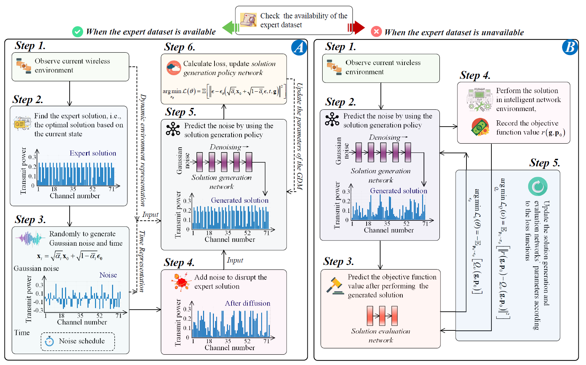 |
Beyond Deep Reinforcement Learning: A Tutorial on Generative Diffusion Models in Network Optimization
Hongyang Du, Ruichen Zhang, Yinqiu Liu, Jiacheng Wang, Yijing Lin, Zonghang Li, Dusit Niyato, Jiawen Kang, Zehui Xiong, Shuguang Cui, Bo Ai, Haibo Zhou, Dong In Kim IEEE COMST The first tutorial paper to explain various applications of diffusion models and coding examples. Paper | |
| 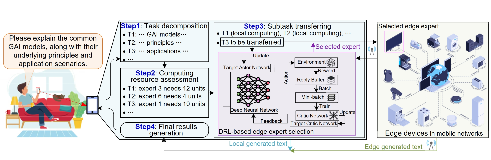 |
Toward Scalable Generative AI via Mixture of Experts in Mobile Edge Networks
Jiacheng Wang, Hongyang Du, Dusit Niyato, Jiawen Kang, Zehui Xiong, Dong In Kim, Khaled B. Letaief Under Review This paper proposes mobile edge networks supported MoE-based GAI. Paper | |
| 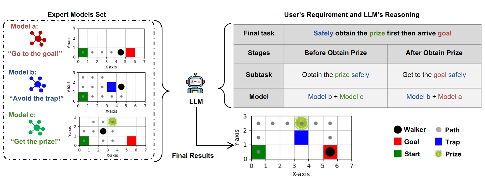 |
Mixture of Experts for Network Optimization: A Large Language Model-enabled Approach
Hongyang Du, Guangyuan Liu, Yijing Lin, Dusit Niyato, Jiawen Kang, Zehui Xiong, Dong In Kim Under Review This paper propose a Mixture of Experts (MoE) framework, augmented with Large Language Models (LLMs), to analyze user objectives and constraints, select specialized DRL experts, and weigh each decision. Paper | |
| 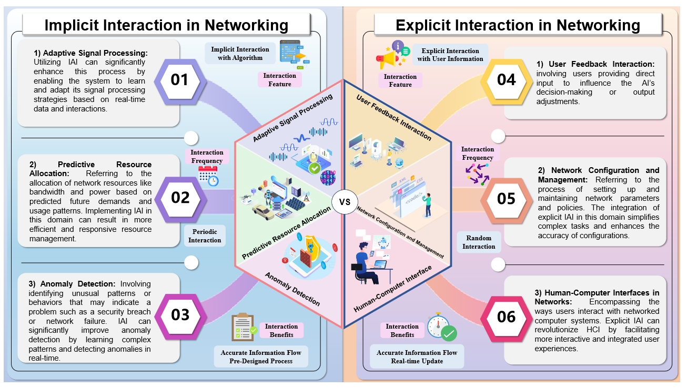 |
Interactive Al with Retrieval-Augmented Generation for Next-Generation Networking
Ruichen Zhang, Hongyang Du, Yinqiu Liu, Dusit Niyato, Jiawen Kang, Sumei Sun, Xuemin Shen, H. Vincent Poor Under Review This paper explores an integration and enhancement of interactive AI (IAI) in networking. Paper | |
| 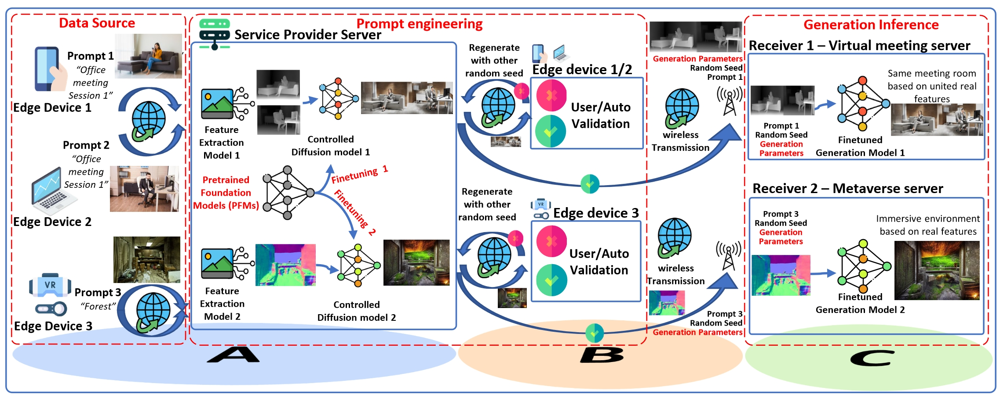 |
Semantic communications for artificial intelligence generated content (AIGC) toward effective content creation
Guangyuan Liu, Hongyang Du, Dusit Niyato, Jiawen Kang, Zehui Xiong, Dong In Kim, Xuemin Shen IEEE Network Magazine In this paper, a novel comprehensive conceptual model for the integration of AIGC and SemCom is developed. Paper | |
| 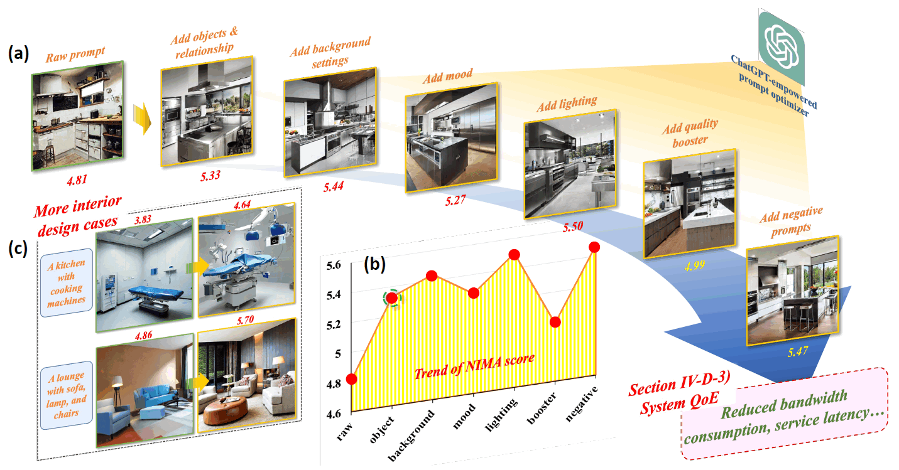 |
Optimizing Mobile-Edge AI-Generated Everything (AIGX) Services by Prompt Engineering: Fundamental, Framework, and Case Study
Yinqiu Liu, Hongyang Du, Dusit Niyato, Jiawen Kang, Shuguang Cui, Xuemin Shen, Ping Zhang IEEE Network Magazine This paper highlights how prompt engineering and AIGC are related to mobile networks. Paper | |
| 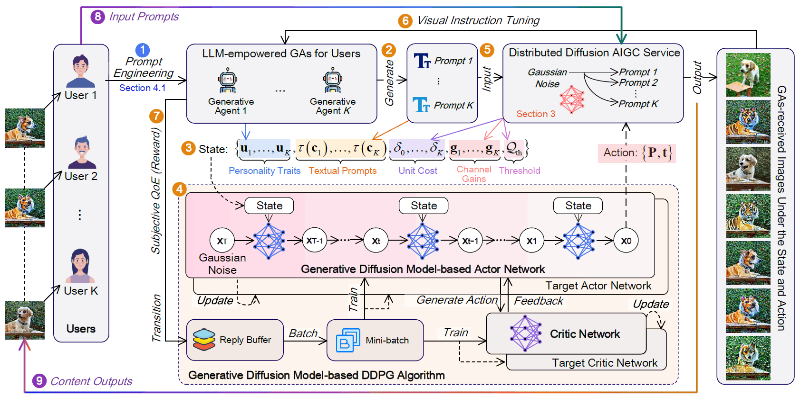 |
User-Centric Interactive AI for Distributed Diffusion Model-based AI-Generated Content
Hongyang Du, Ruichen Zhang, Dusit Niyato, Jiawen Kang, Zehui Xiong, Shuguang Cui, Xuemin Shen, Dong In Kim Under Review This paper introduces Reinforcement Learning With Large Language Models Interaction (RLLI), a user-centric Interactive AI technique, to optimize AIGC services. Paper | |
| 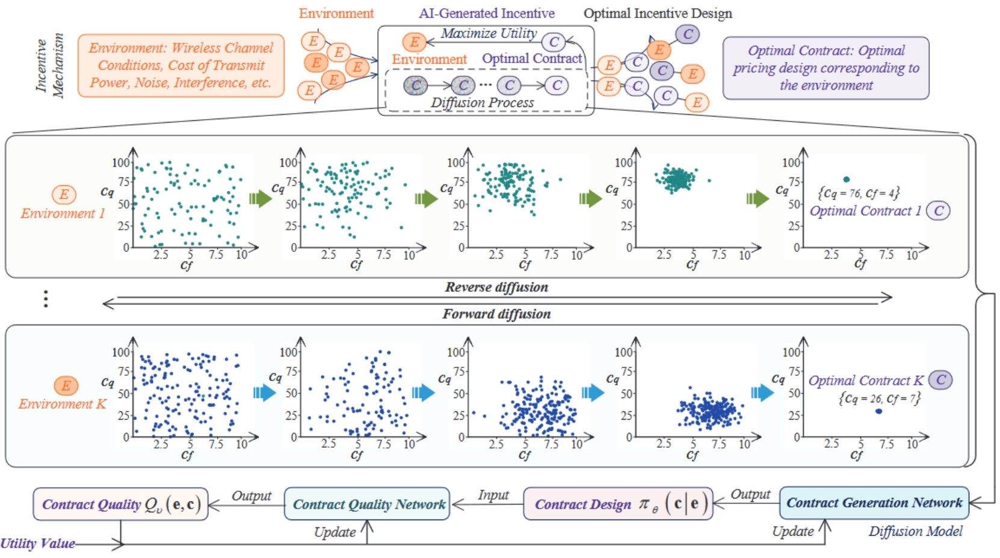 |
AI-Generated Incentive Mechanism and Full-Duplex Semantic Communications for Information Sharing
Hongyang Du, Jiacheng Wang, Dusit Niyato, Jiawen Kang, Zehui Xiong, Dong In Kim IEEE Journal on Selected Areas in Communications This paper proposes a contract theoretic AI-generated incentive mechanism that generates the optimal contract design. Paper | |
| 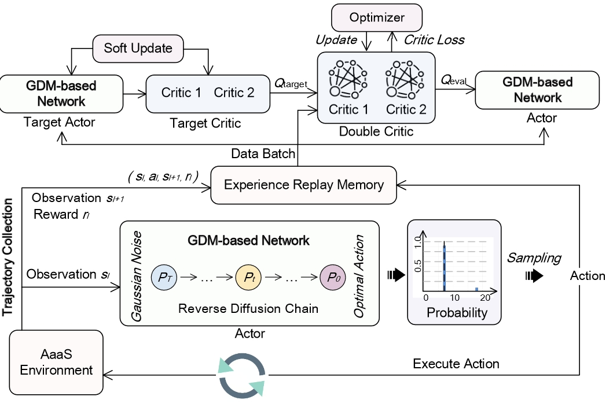 |
Diffusion-based Reinforcement Learning for Edge-enabled AI-Generated Content Services
Hongyang Du, Zonghang Li, Dusit Niyato, Jiawen Kang, Zehui Xiong, Huawei Huang, and Shiwen Mao IEEE Transactions on Mobile Computing This paper proposes a diffusion model-based AI-generated optimal decision (AGOD) algorithm, which can generate the optimal ASP selection decisions. Paper | |
| 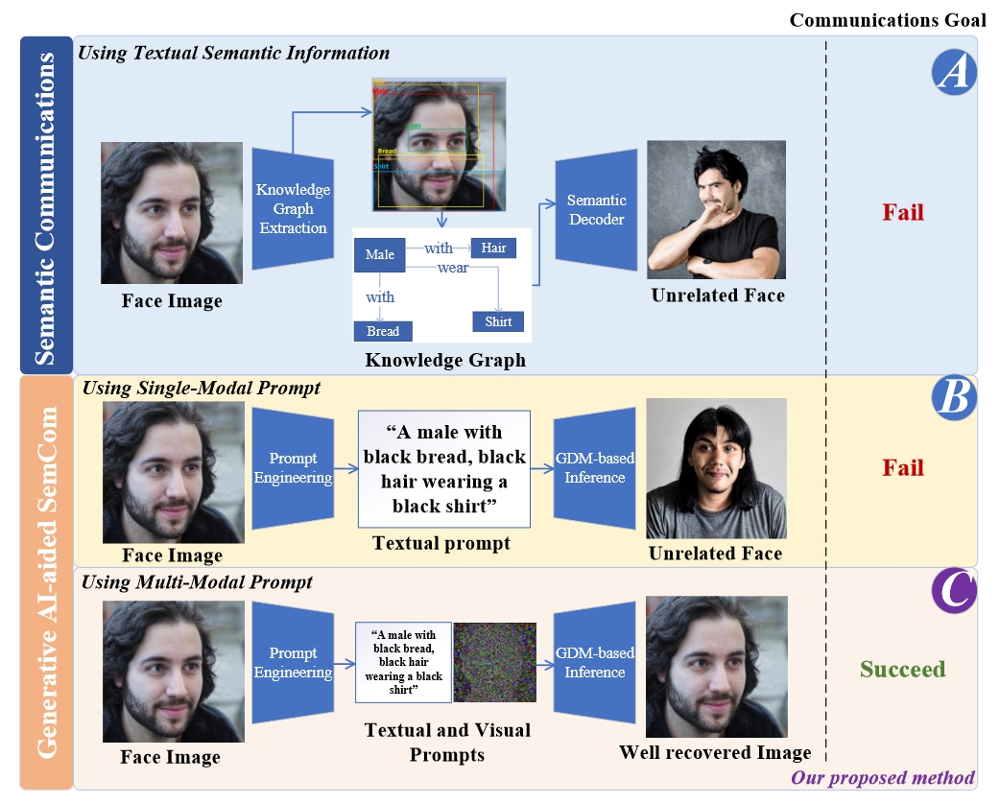 |
Generative AI-aided Joint Training-free Secure Semantic Communications via Multi-modal Prompts
Hongyang Du, Guangyuan Liu, Dusit Niyato, Jiayi Zhang, Jiawen Kang, Zehui Xiong, Bo Ai, Dong In Kim ICASSP 2024 This paper demonstrates how multi-modal prompt (text+image) can improve AIGC used in semantic communication with covert communication technique. Paper | |
| 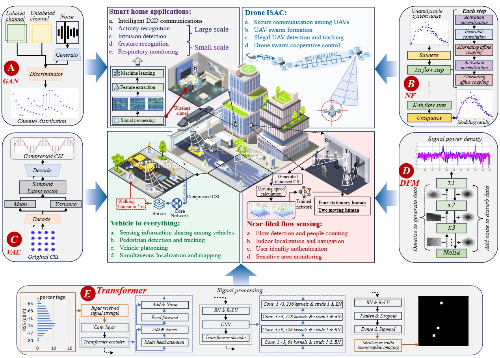 |
Generative AI for Integrated Sensing and Communication: Insights from the Physical Layer Perspective
Jiacheng Wang, Hongyang Du, Dusit Niyato, Jiawen Kang, Shuguang Cui, Xuemin Shen, Ping Zhang IEEE Wireless Communications Magazine The paper showcases the use of generative AI in integrated sensing and communications, especially from physical layer. Paper | |
| 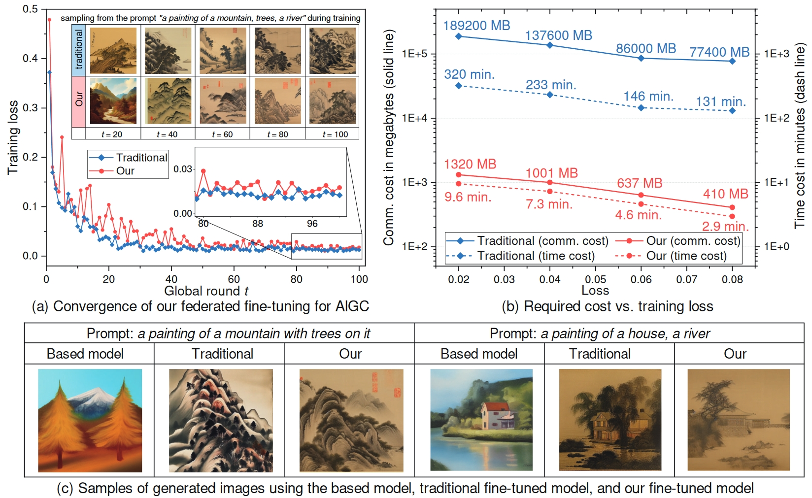 |
Federated Learning-Empowered AI-Generated Content in Wireless Networks
Xumin Huang, Peichun Li, Hongyang Du, Jiawen Kang, Dusit Niyato, Dong In Kim, Yuan Wu IEEE Network Magazine This paper presents the federated learning design to support AIGC with privacy preservation. Paper | |
| 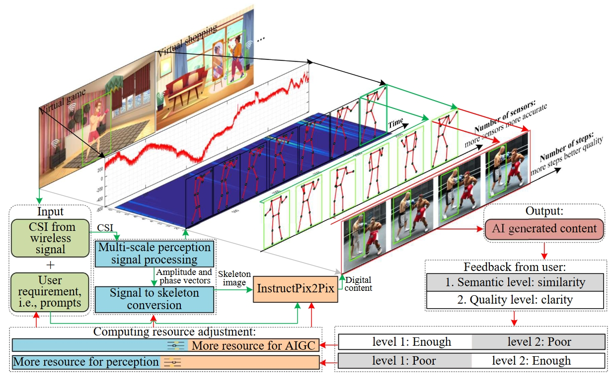 |
Guiding AI-Generated Digital Content with Wireless Perception
Jiacheng Wang, Hongyang Du, Dusit Niyato, Zehui Xiong, Jiawen Kang, Shiwen Mao, Xuemin (Sherman) Shen IEEE Wireless Communications Magazine The paper explains the use of wireless sensing data for input of AIGC applications to generate images and videos. Paper | |
| 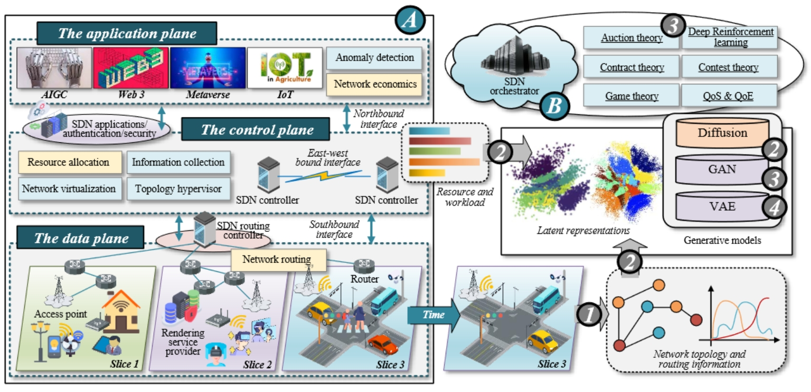 |
Deep Generative Model and Its Applications in Efficient Wireless Network Management: A Tutorial and Case Study
Yinqiu Liu, Hongyang Du, Dusit Niyato, Jiawen Kang, Zehui Xiong, Dong In Kim, Abbas Jamalipour IEEE Network Magazine The paper gives specific examples of generative AI to optimize wireless networks. Paper | |
| 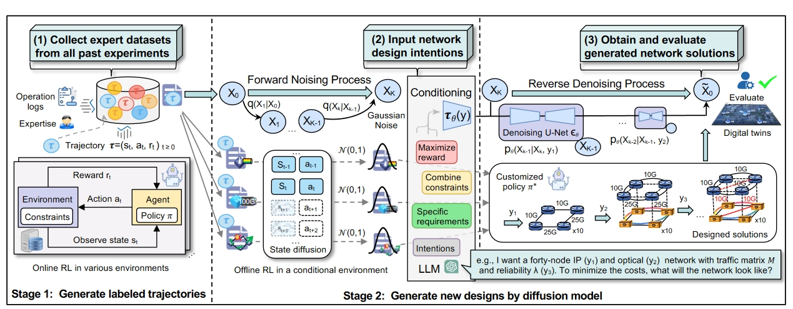 |
AI-Generated 6G Internet Design: A Diffusion Model-based Learning Approach
Yudong Huang, Minrui Xu, Xinyuan Zhang, Dusit Niyato, Zehui Xiong, Shuo Wang, Tao Huang IEEE Network Magazine The paper introduces a concept of AI-Generated Network. Paper | |
| 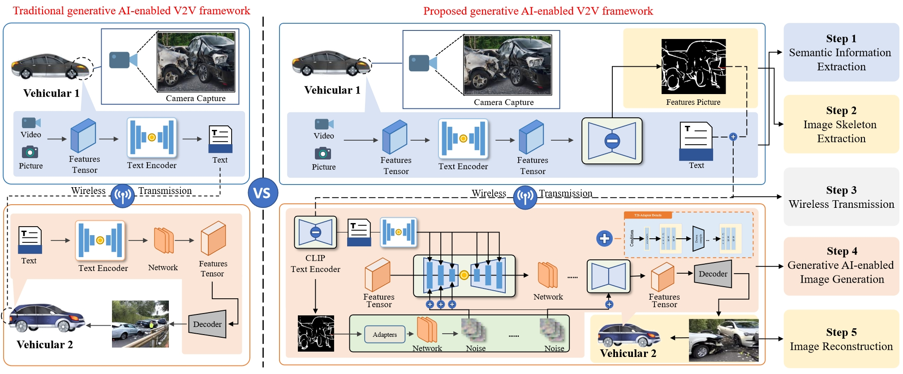 |
Generative AI-enabled Vehicular Networks: Fundamentals, Framework, and Case Study
Ruichen Zhang, Ke Xiong, Hongyang Du, Dusit Niyato, Jiawen Kang, Xuemin Shen, H. Vincent Poor IEEE Network Magazine The paper summarizes and showcases how generative AI can be used in healthcare applications. Paper | |
| 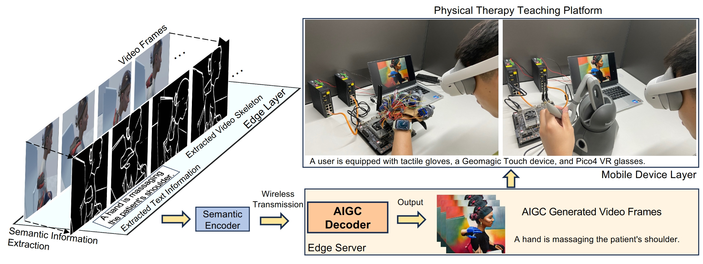 |
A Revolution of Personalized Healthcare: Enabling Human Digital Twin with Mobile AIGC
Jiayuan Chen, Changyan Yi, Hongyang Du, Dusit Niyato, Jiawen Kang, Jun Cai, Xuemin (Sherman) Shen IEEE Network Magazine The paper summarizes and showcases how generative AI can be used in healthcare applications. Paper | |
| 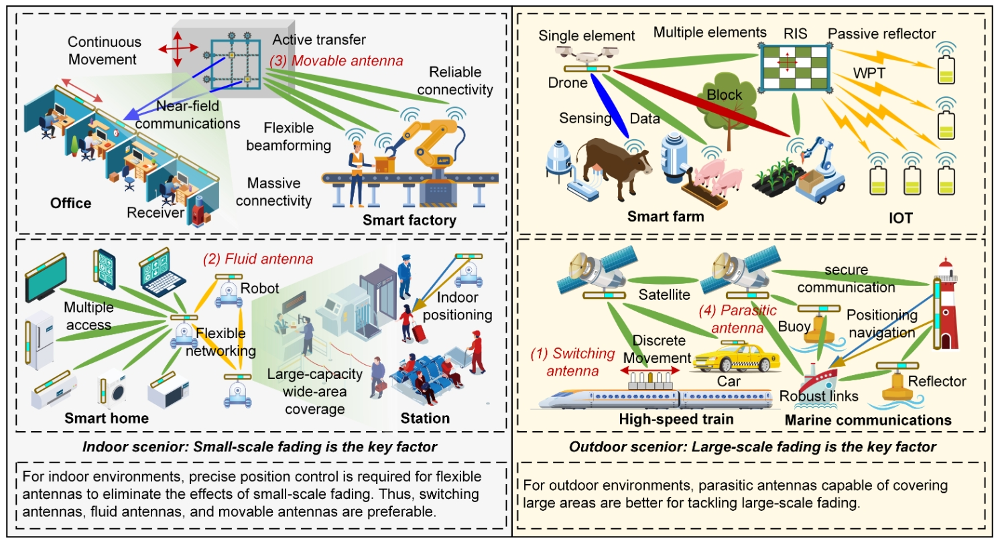 |
Flexible-Position MIMO for Wireless Communications: Fundamentals, Challenges, and Future Directions
Jiakang Zheng, Jiayi Zhang, Hongyang Du, Dusit Niyato, Sumei Sun, Bo Ai, Khaled B. Letaief IEEE Wireless Communications Magazine The paper disucsses a new type of an antenna system that allows antenna elements to be adjusted location-wise; generative AI is also used to optimize the location and movement paths of the antenna elements. Paper | |
| 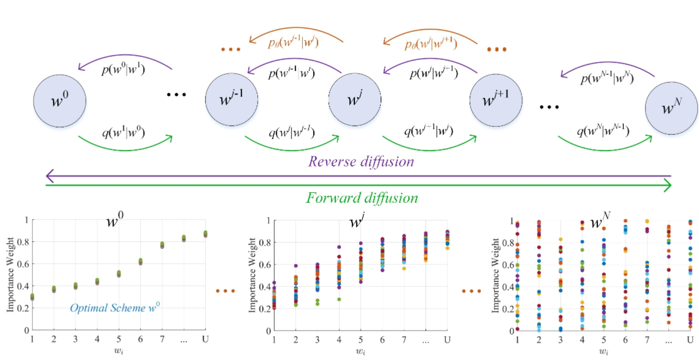 |
YOLO-based Semantic Communication with Generative AI-aided Resource Allocation for Digital Twins Construction
Baoxia Du, Hongyang Du, Haifeng Liu, Dusit Niyato, Peng Xin, Jun Yu, Mingyang Qi, You Tang IEEE Internet of Things Journal The paper introduces a new semantic communication application that utilizes a generative AI method to solve edge resource allocation to construct efficient digital twins. Paper | |
| 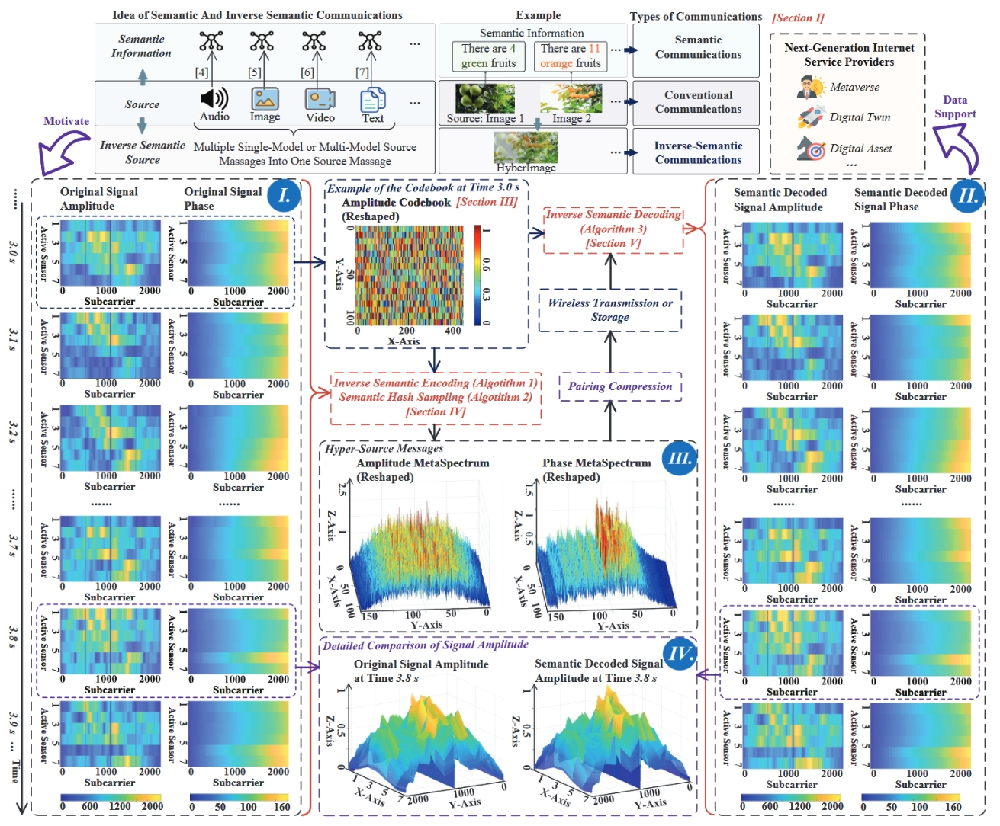 |
Semantic Communications for Wireless Sensing: RIS-aided Encoding and Self-supervised Decoding
Hongyang Du, Jiacheng Wang, Dusit Niyato, Jiawen Kang, Zehui Xiong, Junshan Zhang, Xuemin (Sherman) Shen IEEE Journal on Selected Areas in Communications This paper proposes the inverse semantic communications. Paper | |
| 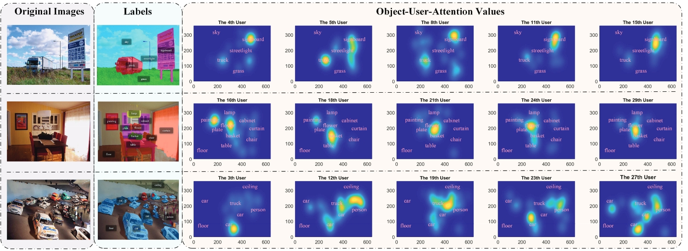 |
Attention-aware Resource Allocation and QoE Analysis for Metaverse xURLLC Services
Hongyang Du, Jiazhen Liu, Dusit Niyato, Jiawen Kang, Zehui Xiong, Junshan Zhang, Dong In Kim IEEE Journal on Selected Areas in Communications This paper proposes a novel metric named Meta-Immersion that incorporates both the objective KPIs and subjective feelings of Metaverse users. Paper | |